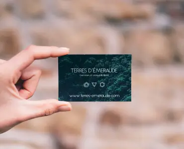
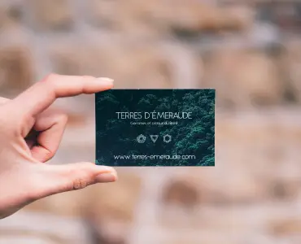

Homework #9. Web-graphics
Іконки
Іконки - це невеликі схематичні зображення (векторні), які несуть певну функцію або доповнюють контент та підсилюють ефект. Іконки мають формат SVG. Можуть додаватись як через тег <img> та і через властивість background у CSS.
Контентні зображення
Є контентом сайту. Додаються через тег <img> щоб власник мав змогу змінювати їх через адмін панель.
Підготовка до інтеграції на сайт відбувається подібним чином:
-
- Якщо зображення не має прозорості - експортуємо у JPG
- В зворотньому випадку - PNG
- Оптимізуємо зображення за допомогою оналайн-сервісу tinypng
- Конвертуємо зображення у формат WEBP

 


Декоративні зображення
Даний тип зображень - це зображення які не несуть в собі жодної інформації. Вони присутні тільки у дизайнерський цілях. Корисно буде задати собі таке питання: "Якщо зображення зникне, чи зможе користувач отримати інформацію від контенту в тому ж обсязі?" Декоративні зображення завжди додаються через CSS властивість background. Можуть бути як у WEBP-форматі, так і у SVG, в залежності векторне чи растрове це зображення.